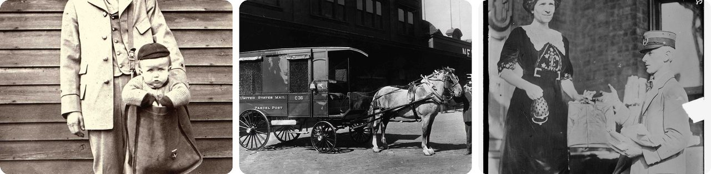

🌍 Top 10 Weird Mailboxes and Post
Nov 16, 2026
1. 🇳🇴 Norway has a post office at the bottom of the sea
 In Risør, a small town on Norway's south coast, the local scuba diving club opened a post office 4 meters underwater on June 4, 2004. That's about as deep as the deep end of a big swimming pool.
In Risør, a small town on Norway's south coast, the local scuba diving club opened a post office 4 meters underwater on June 4, 2004. That's about as deep as the deep end of a big swimming pool.
It's a fiberglass diving bell filled with air, so the inside stays dry. A 5-ton weight, about as heavy as an elephant, holds it to the sea floor.
Here's how a postcard gets there. You drop it in a box on the pier → a few times a week the diving postmaster carries the mail down in a watertight bag → it gets stamped inside the air bubble → it comes back up and joins the normal mail.
It's a mailbox you need flippers to empty.
2. 🇫🇷 Paris sent letters through air tubes under the streets for 118 years
 From 1866 to 1984, Paris had a pneumatic post: messages rode in small canisters pushed by air through metal tubes. The tubes ran through the city's sewers, so nobody had to dig new trenches and the mail skipped the traffic above.
From 1866 to 1984, Paris had a pneumatic post: messages rode in small canisters pushed by air through metal tubes. The tubes ran through the city's sewers, so nobody had to dig new trenches and the mail skipped the traffic above.
You wrote a short note on a "petit bleu" (little blue) form. Air pressure shot it to the office nearest your friend → a courier ran it to their door. The canisters moved at about 24 km/h, as fast as someone riding a bike.
At its biggest, in 1934, the network had 427 km of tubes, roughly the distance from Paris to London. In 1945 it carried 30 million messages.
Think of it as texting, but the text is a piece of paper and the internet is a sewer.
3. 🇺🇸 The US Post Office once delivered mail by cruise missile
 On June 8, 1959, the submarine USS Barbero fired a Regulus cruise missile at a Navy air station in Mayport, Florida. Its nuclear warhead had been swapped for two mail containers holding about 3,000 letters.
On June 8, 1959, the submarine USS Barbero fired a Regulus cruise missile at a Navy air station in Mayport, Florida. Its nuclear warhead had been swapped for two mail containers holding about 3,000 letters.
Twenty-two minutes later the missile landed safely. The mail was then sent to the Jacksonville post office and delivered as usual.
The Postmaster General said that before people reached the moon, missiles would carry mail from New York to California, Britain, India or Australia within hours. It was the only time "Missile Mail" was ever sent.
It's like mailing a postcard by fireworks, and it worked exactly once.
4. 🇪🇨 In the Galápagos, a wooden barrel has been the post office for 200 years
 Long ago, whaling ships stopped at Floreana Island in the Galápagos for water and food. Since the 1800s, sailors kept a wooden barrel at a spot now called Post Office Bay.
Long ago, whaling ships stopped at Floreana Island in the Galápagos for water and food. Since the 1800s, sailors kept a wooden barrel at a spot now called Post Office Bay.
A crew heading out would drop letters in it. A ship heading home would dig through the barrel, grab any letters going its way and carry them along, mostly to Europe and the US.
Visitors still do it today, with no stamps at all. You leave a postcard, then look through the pile for one addressed near your home and deliver it by hand.
In other words, the mail carrier is whoever happens to stop by next.
5. 🇺🇸 In the Grand Canyon, mules still carry the mail
 Supai, the home of the Havasupai Tribe, sits on the floor of the Grand Canyon in Arizona. It's 8 miles (13 km) from the nearest road and has no cars, so it's the only place in the US where mules still carry the mail.
Supai, the home of the Havasupai Tribe, sits on the floor of the Grand Canyon in Arizona. It's 8 miles (13 km) from the nearest road and has no cars, so it's the only place in the US where mules still carry the mail.
A driver brings the mail an hour to the top of the trail. Then it's loaded onto mules, each carrying up to 200 pounds (90 kg), about the weight of a grown man, for the trip down the canyon.
Most of that mail is food. Fresh groceries wait in a walk-in freezer at the Peach Springs post office, the only post office in the country with one.
Basically, the delivery truck has four legs and long ears.
6. 🇹🇴 A Tongan island got its mail in tin cans thrown off ships
 Niuafoʻou is a volcanic island in Tonga with no deep harbor, so big ships couldn't stop there. By 1912, people had come up with "tin can mail": passing ships sealed mail in biscuit or kerosene tins and tossed them overboard.
Niuafoʻou is a volcanic island in Tonga with no deep harbor, so big ships couldn't stop there. By 1912, people had come up with "tin can mail": passing ships sealed mail in biscuit or kerosene tins and tossed them overboard.
Swimmers went out to grab them. They held onto a floating pole called a fau, and a single trip could take several hours.
In 1931 a shark killed one of the swimmers, so swimming was banned and canoes went out instead. Stamp collectors loved the specially stamped envelopes so much that the island became known as "Tin Can Island."
It's home delivery, if home were in the middle of the ocean.
7. 🇺🇸 In 1914, parents mailed their 5-year-old to Grandma

In 1913 the US Post Office started delivering packages. On February 19, 1914, the parents of 5-year-old Charlotte May Pierstorff in Grangeville, Idaho, sent her that way to her grandmother in Lewiston, because it was cheaper than a train ticket.May weighed 48.5 pounds (22 kg). She rode in the train's mail car with 32 cents of postage stuck to her coat, about $10 in today's money.
A railway mail clerk, her mom's cousin, kept an eye on her and dropped her off at Grandma's house. Her trip helped push the Post Office to ban mailing people.
She was a package that could talk.
8. 🇦🇶 Antarctica's post office is surrounded by penguins
 Port Lockroy, on a tiny island off the Antarctic Peninsula, has the southernmost working post office in the world. People call it the "Penguin Post Office."
Port Lockroy, on a tiny island off the Antarctic Peninsula, has the southernmost working post office in the world. People call it the "Penguin Post Office."
Half the island is open to visitors and the other half is kept for the penguins. Staff count the birds to see how all the tourists affect them.
Over the five-month cruise season, about 18,000 visitors show up and send around 70,000 pieces of mail. A staff of just four handles all of it.
Think of it as a busy holiday post office, except the line outside is penguins.
9. 🇳🇿 A New Zealand island sent its mail by pigeon
 Great Barrier Island sits about 90 km off Auckland. In 1894 a ship wrecked there and 121 people died, but the news took several days to reach the mainland, because only one steamer came each week.
Great Barrier Island sits about 90 km off Auckland. In 1894 a ship wrecked there and 121 people died, but the news took several days to reach the mainland, because only one steamer came each week.
So in 1897 a pigeon post began. Pigeons rode to the island on the weekly steamer → people tied up to five notes on each bird's legs → the pigeons flew home to Auckland. They even had their own stamps, which collectors now hunt for.
At first the pigeons only flew one way, toward Auckland. The service ended in 1908, when a telegraph cable finally reached the island.
In other words, the island's internet had feathers.
10. 🇺🇸 A Detroit boat has its own ZIP code
 The J. W. Westcott II is a mail boat on the Detroit River, and it's an official post office with the only floating ZIP code in the US: 48222.
The J. W. Westcott II is a mail boat on the Detroit River, and it's an official post office with the only floating ZIP code in the US: 48222.
Sailors on the big cargo ships passing Detroit get mail addressed to their ship's name at that ZIP code. The little boat pulls up alongside while the ship keeps moving, and the mail goes up in a bucket on a rope.
The company started in 1874, when Captain John Ward Westcott rowed supplies out to passing ships. By 1895 he was carrying the mail too.
It's a drive-through window, but the cars are giant ships.
Fun fact
Tin Can Island's envelopes made Tonga famous with stamp collectors, and Tonga kept going. In 1963 it printed the world's first self-adhesive stamps: round, gold-foil stamps made to match its coins. Later Tongan stamps came shaped like hearts, birds and fruit, and some were too big to fit on a normal envelope. Which makes you wonder what other strange stamps countries have printed over the years.
Photo credits (Wikimedia Commons)
- #1: 20040809 UVP H undervann 3.jpg by Kristen Thorsen, CC BY-SA 3.0
- #1: 20040605 UVP Haakon sandvik stempler.jpg by Kristen Thorsen, CC BY-SA 3.0
- #1: 20040531 UVP Sjosetting 1.jpg by Kristen Thorsen, CC BY-SA 3.0
- #2: Appareil pneumatique postal Fortin-Hermann à Paris-Central en 1987.jpg by Jérome Ferri, CC BY-SA 4.0
- #2: Carte pneumatqique de 1899.jpg by Renhour48, CC0
- #2: Posta pneumatica ufficio centrale di Parigi.jpg by Unknown authorUnknown author, Public domain
- #3: Regulus Missile Mail at Naval Air Station Mayport, Florida (USA), 8 June 1959 (L55-16.2.30).jpg by unknown, Public domain
- #3: Missilemail.jpg by USPS, Public domain
- #3: Regulus I Missile Mail container (smithsonian_postal_museum) by unknown, CC0
- #4: Post office-Floreana.jpg by ProfessorX, CC BY-SA 3.0
- #4: The barrel at Post Office Bay, Floreana Island (flickr) by NH53, CC BY 2.0
- #4: The barrel at Post Office Bay (flickr) by NAParish, CC BY-SA 2.0
- #5: SupaiUSMailMules.jpg by Elf, CC BY-SA 3.0
- #5: SupaiMarket.jpg by Elf, CC BY-SA 3.0
- #5: Store / Post Office, Supai Village (flickr) by runnr_az, CC BY 2.0
- #6: Pacific Far East Line envelope for Tin Can Island mail.jpg by FAHansson, CC0
- #6: Canoe Mail.jpg by FAHansson, CC0
- #6: Satellite view of Niuafo'ou, 2005-03-19.jpg by International Space Station crew, Public domain
- #7: Uniformed Letter Carrier with Child in Mailbag.jpg by Unidentified Photographer, Public domain
- #7: Parcel Post Wagon in New Bedford, Massachusetts (2551250356).jpg by Smithsonian Institution from United States, No restrictions
- #7: Mrs. Wm. Sulzer & parcel post LCCN2014691323.jpg by Bain News Service, publisher, Public domain
- #8: Port Lockroy Antarctic Peninsula 2.jpg by Butterfly voyages - Serge Ouachée, CC BY-SA 3.0
- #8: Port Lockroy, Antarctica.jpg by Liam Quinn, CC BY-SA 2.0
- #8: Port Lockroy 20120128 144236.jpg by Rob Oo from NL, CC BY 2.0
- #9: MA I149530 TePapa Great-Barrier-Pigeongram full.jpg by Harry Wrigg, Public domain
- #9: Postduif.jpg by Patrick Edwin Moran, Public domain
- #9: Franco-British carrier ready to be released to carry a long distance message - Flickr - National Library of Scotland.jpg by National Library of Scotland from Scotland, No restrictions
- #10: J.W. Westcott II approaching freighter.jpg by Notorious4life (talk) (Uploads), CC0
- #10: J.W. Westcott II with 48222 post office.jpg by Notorious4life (talk) (Uploads), CC0
- #10: J.W. Westcott II.jpg by Sara Hattie, CC BY 2.0


,_8_June_1959_(L55-16.2.30).jpg){kind=link}


.jpg){kind=link}